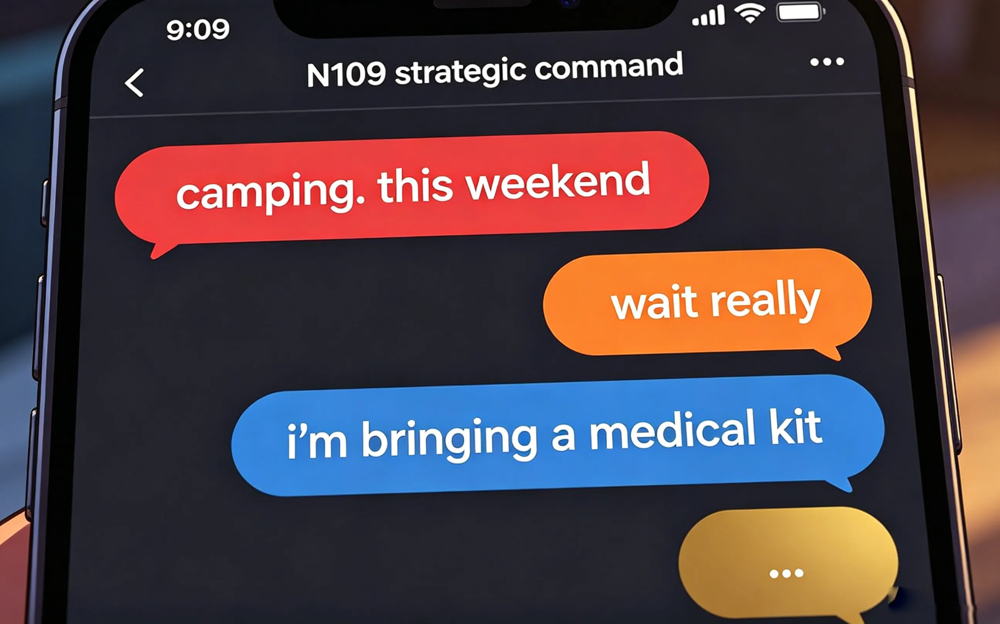
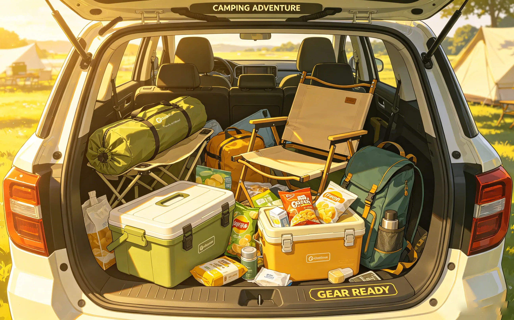
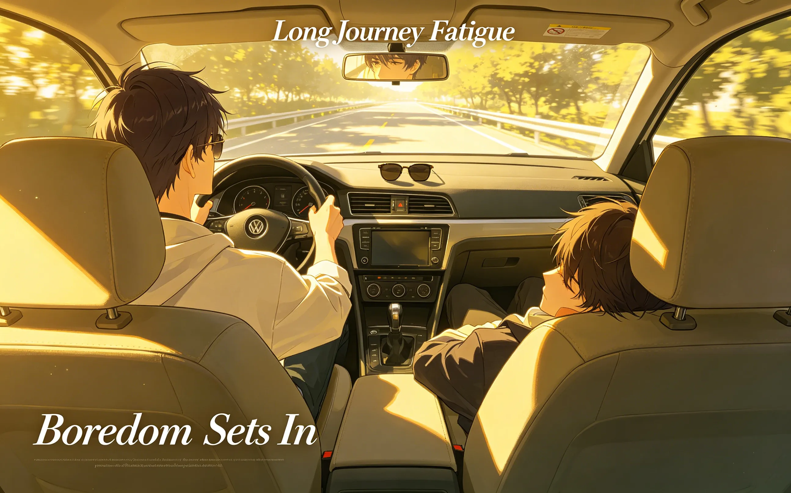
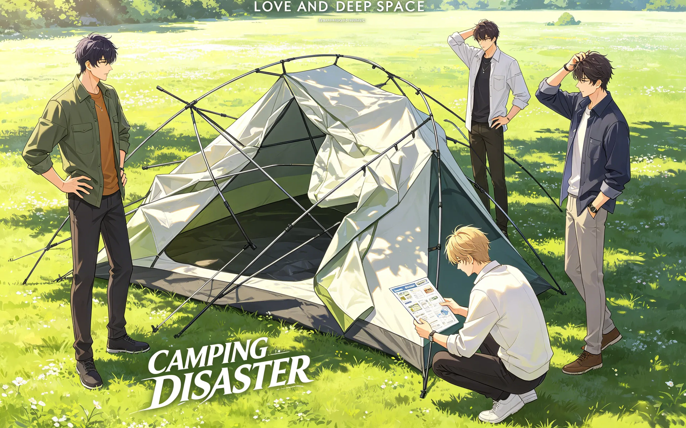
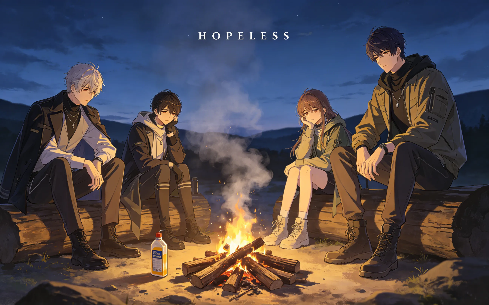
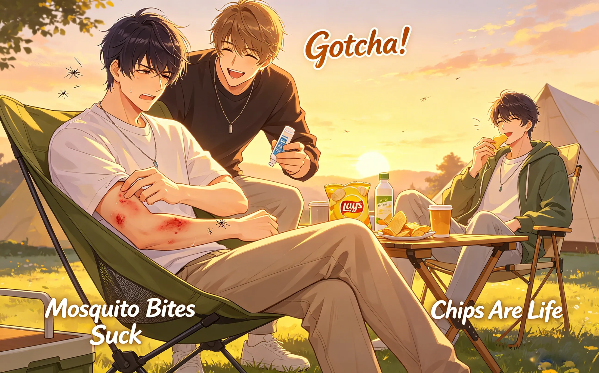
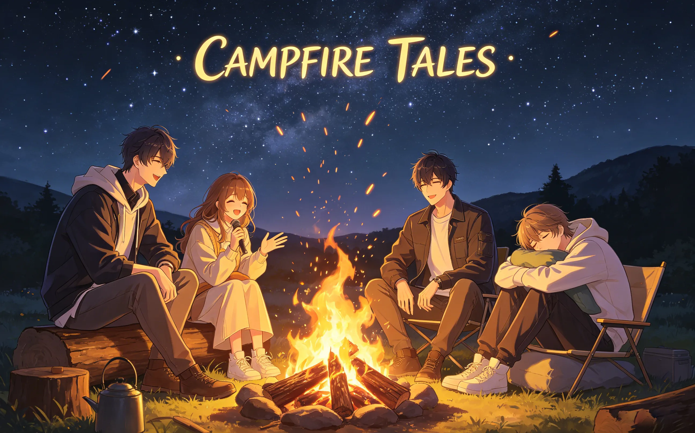
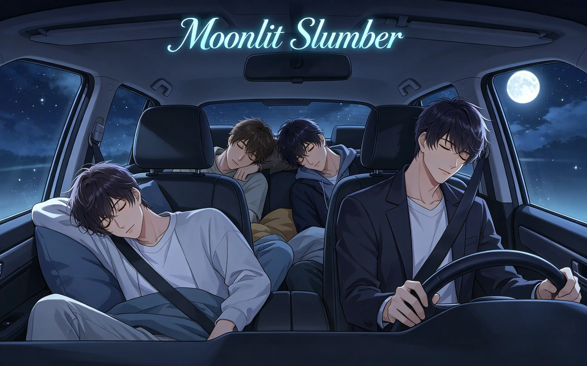
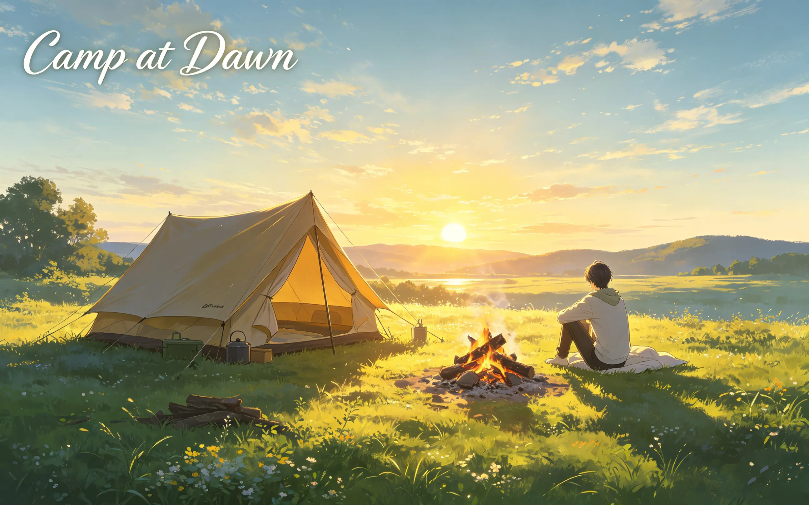

or: four men, one tent, zero survival instincts
it started, as most disasters do, with sylus.
"we should go camping," he said.
no one asked why. no one ever asks why.
this is what happened next.


sylus arrived first. black car. black coat. black sunglasses. indoors. at 7:45am.
rafayel arrived second. he brought three bags. none of them contained anything useful.
"why do you have a suit jacket," said zayne, who arrived third.
"in case we go somewhere fancy."
"we're going to the woods."
"the woods can be fancy."
zayne stared at him. rafayel stared back. neither blinked.
xavier arrived fourth. twelve minutes late. he had fallen asleep in the car again.
"sorry," he said. "the seat was comfortable."
"you weren't driving," said rafayel.
"i know. the passenger seat."
silence.
"let's go," said sylus.
and they went.

sylus drove. one hand on the wheel. the other resting on the window. he looked like he was in a music video.
rafayel sat in the passenger seat. he immediately put on sunglasses.
"it's cloudy," said zayne from the back.
"it's about the image."
xavier was already asleep. again.
they drove for two hours. rafayel played music. zayne complained about the volume. sylus said nothing. xavier slept through all of it.
at one point, rafayel asked "are we there yet" six times in ten minutes.
sylus did not answer. he did not even blink.
zayne considered jumping out of the car.
xavier, still asleep, mumbled "snacks."
it was going to be a long weekend.

they arrived. the campsite was beautiful. trees. river. stars.
none of them noticed.
"where's the tent," said sylus.
rafayel looked at his bags. "i thought you brought it."
"i thought YOU brought it."
"i brought the suit jacket."
silence.
zayne opened the trunk. "it's here."
they stared at the tent bag. it was large. intimidating. full of poles and instructions.
"how hard can it be," said sylus.
famous last words.
they spent forty-five minutes trying to set up the tent. poles went in wrong places. the instructions were in a language none of them recognized. rafayel stepped on a pole. it snapped. xavier held up a piece of fabric and asked "does this go here" while pointing at a tree.
zayne read the instructions for the fifth time. "i think we're missing a piece."
"we're missing a lot of pieces," said rafayel. "including my will to live."
sylus looked at the half-collapsed tent. then at the sky. then at his companions.
"we're sleeping in the car."
no one argued.

"i'll start the fire," said sylus.
this should have been the first warning.
he arranged the wood in a perfect square. it looked architectural. it did not look flammable.
"you need kindling," said zayne.
"i have kindling." sylus held up a single twig.
"that's one twig."
"it's a nice twig."
rafayel tried to help. he poured an entire bottle of lighter fluid onto the wood.
"too much," said zayne.
"there's no such thing as too much."
there was. there very much was.
the fire burst into a tower of flames. everyone jumped back. xavier, who had been sitting nearby, opened his eyes, looked at the fire, and closed them again.
"the snacks are in the car," he said.
the fire died within thirty seconds. the lighter fluid was gone. the wood was charred. there was no warmth.
sylus stared at the ashes.
"we'll try again."
they tried again. four more times. each attempt was worse than the last.
eventually, they ate cold food straight from the package. xavier was unbothered. he had been preparing for this moment his whole life.

night fell. the bugs came out.
rafayel was the first victim.
"something bit me."
"it's a mosquito," said zayne.
"it hurts."
"it's a mosquito."
"i think i'm dying."
zayne looked at the bite. "you're not dying."
"you don't know that."
"i'm a doctor."
"you're biased."
zayne opened his medical kit. it was extensive. there were things in there that definitely did not belong in a camping first aid kit.
"is that a scalpel," said sylus.
"you never know."
"we're camping."
"emergencies happen."
rafayel got bit three more times. he demanded the entire bottle of anti-itch cream. zayne gave him one drop.
"this is medical negligence."
"this is conservation of resources."
xavier, who had not been bitten once, sat peacefully eating chips.
"how are you not getting bit," said rafayel.
xavier shrugged. "maybe i'm not tasty."
"that's not helpful."
"i'm also very still."
he demonstrated by not moving. a mosquito landed on his arm. it did not bite. it flew away.
rafayel stared in disbelief. "i hate you."
xavier smiled. "i know."

after two hours, they finally got the fire working. sylus refused to take credit. rafayel took credit for him.
they sat around the flames. the stars were out. the air was cold. for a moment, it was almost peaceful.
then rafayel said "let's tell scary stories."
"no," said zayne.
"yes," said rafayel.
sylus said nothing. xavier was already falling asleep again.
rafayel told a story about a ghost in the woods. it was not scary. it was mostly about a ghost who couldn't find its keys.
"that's not a scary story," said zayne.
"it's scary if you're the ghost."
zayne told a story about a patient who had a rare disease. it was medically accurate. it was terrifying.
"why do you know so many ways to die," said rafayel.
"i'm a doctor."
"that's not an answer."
sylus told a story about n109. it was not a ghost story. it was about a man who owed him money. the man disappeared. no one asked what happened to him.
the fire crackled. the stars shone. xavier slept.

they gave up on the tent. four men. one car. it was uncomfortable.
xavier took the back seat. he fell asleep immediately.
rafayel took the passenger seat. he reclined it too far. zayne, in the back, complained.
"your seat is in my face."
"it's in everyone's face."
sylus sat in the driver's seat. he did not recline. he did not sleep. he watched the woods.
"are you going to sleep," asked rafayel.
"no."
"why not."
"someone has to watch for bears."
"there are no bears."
sylus did not respond.
an hour later, rafayel asked again. "are you still awake."
"yes."
"why."
"bears."
there were no bears.
but sylus watched anyway. because that's what he does.

the sun rose. the birds sang. xavier was the first to wake up.
"breakfast?" he said.
they had no fire. no stove. no hot water. they ate cold granola bars.
xavier was unbothered. "these are good."
"they're the same ones we ate last night," said rafayel.
"i know."
"you ate them last night."
"i'm eating them again."
zayne made coffee using a portable heater he had secretly brought. everyone stared at him.
"why didn't you use this last night," said rafayel.
"you didn't ask."
sylus drank his coffee black. he looked at the collapsed tent. the dead fire. the exhausted group.
"we should do this again."
everyone stared at him.
"no," said rafayel.
"absolutely not," said zayne.
xavier shrugged. "i'd come."
"of course you would," said rafayel.
sylus smiled. small. almost invisible.
"next time, i'll bring marshmallows."
no one believed him.